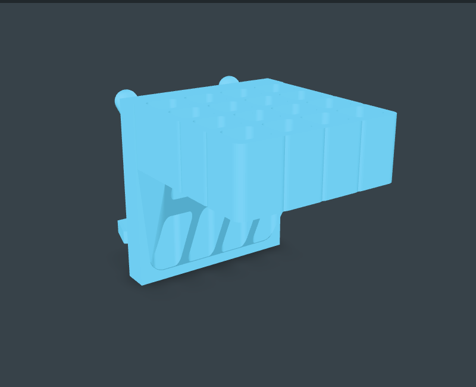
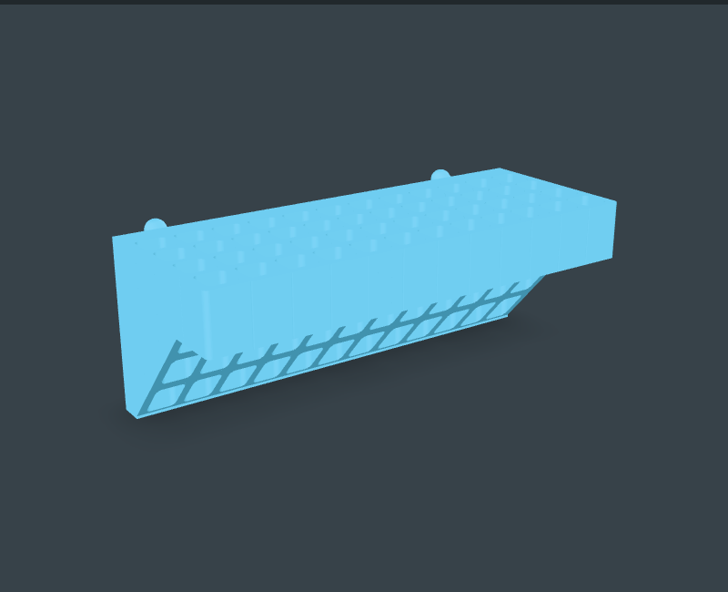
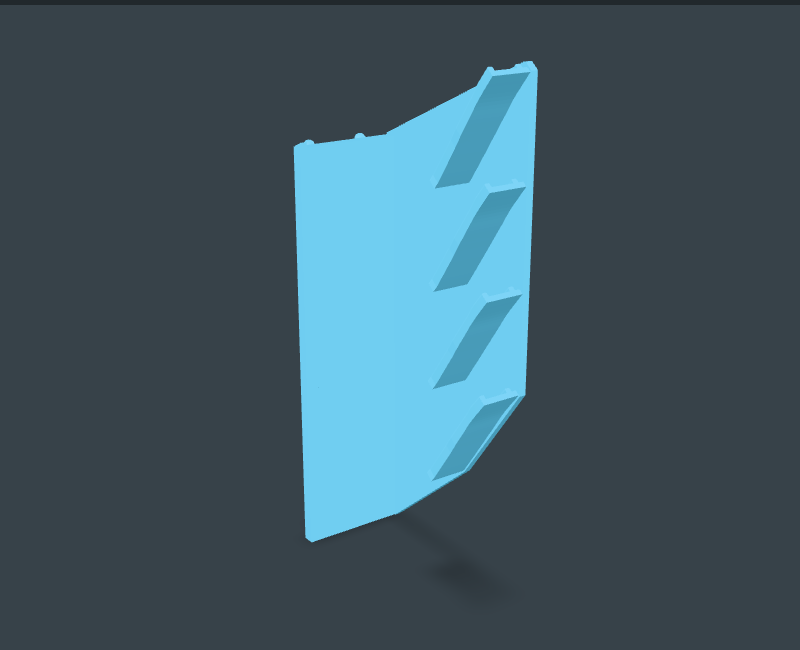
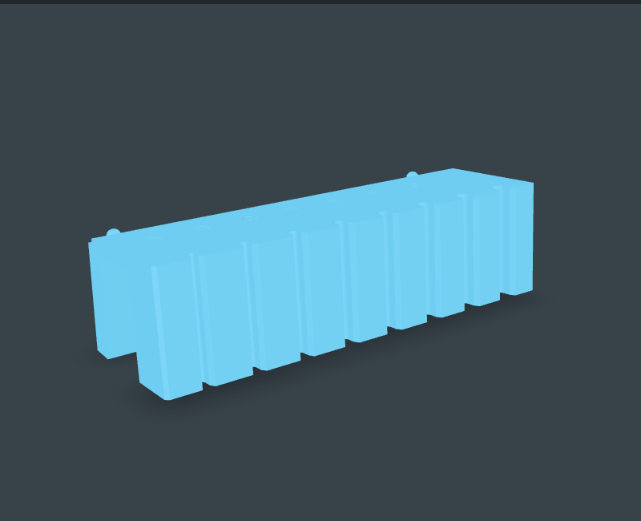

11 custom-peg remixes
Pegstr remixes
The original Pegstr pockets and profiles, remounted with PF02 #9 hooks and PF07 #5 hoops. Attribution and source recipes included.
Explore Pegstr remixes →Current pegs · ready-made holders
Browse Repro bespoke models for soldering, screwdriver and workshop storage, or Pegstr remixes and expansions for remounted holders, seat arrays and bins.
September 16 workshop: What makes Pegstr work, practical review findings, and the SWD01 removable magnetic screw-dish prototype with CAD downloads.
Current pegs across the gallery: 36 round seats with PF02 #9 hooks, PF07 #5 hoops and a flat top for upside-down printing. Current mounted bodies use PF02 #9 hooks and PF07 #5 hoops. All 19 Pegstr remixes and arrays have planar upside-down print faces. Print poses and support needs are shown per part.
Recent Repro designs: Open spool cradle, guided four-stack tweezers, rounded tool funnel, braid holder, drip tray and removable liner.

The original Pegstr pockets and profiles, remounted with PF02 #9 hooks and PF07 #5 hoops. Attribution and source recipes included.
Explore Pegstr remixes →
Original-generator seat arrays plus four wide, flat-bottom bins. Useful counts and grid-aligned widths, with current pegs and explicit print poses.
Explore Pegstr expansion pack →
Separate mounts for barrels, solder reels, snips, braid and tweezers, plus a removable drip tray. Installed and print views, support guidance and CAD downloads together.
Explore Solder station →
Lettered shaft fits with open channels for reusable 20 × 10 × 3 mm magnets. Load after printing; loose spacers and tape hold them for testing.
Open screwdriver WIP →